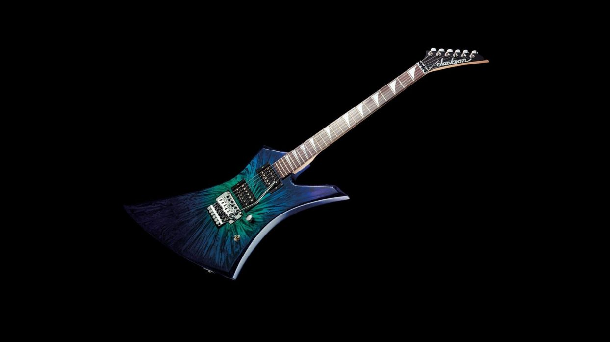

STRATOCASTER

La Stratocaster, popularmente conocida como Strat o Strato, es un modelo de guitarra eléctrica diseñado entre 1952 y 1954 por Leo Fender, Bill Carson, George Fullerton y Freddie Tavares. Siendo fabricada y comercializada por Fender Musical Instruments Corporation desde 1954 a la actualidad. Las guitarras utilizadas por músicos célebres suelen convertirse en cotizadas piezas de coleccionismo, y así ocurre también en el caso de la Fender Stratocaster. Entre las guitarras eléctricas por las que se han pagado los mayores precios en subasta, se cuentan las Stratocaster de David Gilmour, (3 975 000 de dólares) Jimi Hendrix, (2 000 000 de dólares), Eric Clapton (Blackie, 959 500 dólares y Stevie Ray Vaughan (Lenny, 623 500 dólares).11 No obstante, estos precios astronómicos son una excepción, y están reservados a modelos icónicos que han sido tocados por un determinado artista en un tiempo determinado (un disco, una gira, una banda particular, una época o incluso toda una trayectoria). Entre los músicos más destacados que han usado la Stratocaster como herramienta habitual de trabajo, al margen de los ya mencionados en el párrafo anterior, tenemos a Ritchie Blackmore, Mark Knopfler, Hank Marvin, John Mayer, Buddy Guy, David Gilmour, Jeff Beck, John Frusciante, Buddy Holly o Rory Gallagher.